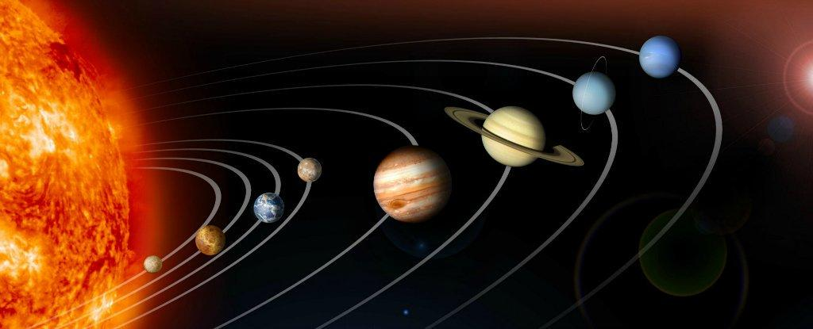
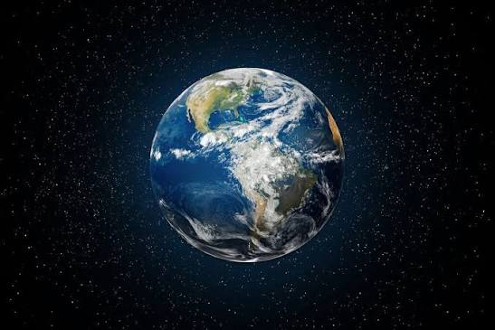
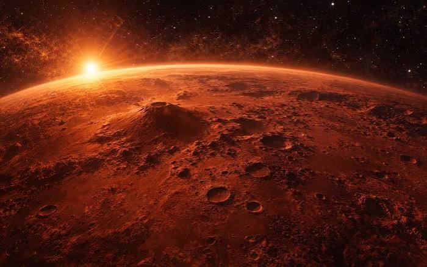

EXPLORE THE 8 PLANETS
Click on any planet to explore its details.
1. Mercury

The smallest planet in our Solar System.
Discover the 8 planets, their unique features, and amazing facts about our cosmic

Our Solar System consists of the Sun and eight amazing planets.
Click on any planet to explore its details.
The smallest planet in our Solar System.

The hottest planet in our Solar System.

Our home planet and the only known planet to support life.

Known as the Red Planet.

The largest planet in our Solar System.

Famous for its beautiful ring system.

An ice giant with a unique tilted rotation.

The farthest planet from the Sun.
Mercury is the smallest planet in our Solar System.
Venusis the hottest planet in our Solar System.
Earthis our home planet. It supports life and has liquid water on its surface.
Marsis called the Red Planet because of its reddish appearance.
Jupiter is the largest planet in our Solar System.
Saturnis famous for its spectacular rings.
Uranusis an ice giant with a blue-green appearance.
Neptune is the farthest planet from the Sun.
Cosmic Explorer is a simple educational space encyclopedia designed to help students explore the Solar System.
Learn about planets, discover interesting facts, and explore the wonders of space.
Explore | Learn | Discover
Back to Planets